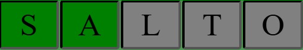
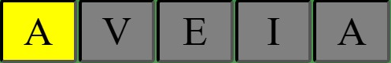
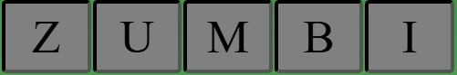

No termus, o seu objetivo é descobrir a palavra secreta de 5 letras. Toda vez que você digita uma palavra, ela será comparada com a palavra objetivo e fornecerá informações sobre as letras.

se a letra for verde, significa que ela faz parte da palavra e está na posição correta.

Se for amarela, indica que a letra faz parte da palavra, mas está na posição errada.

Se a letra aparecer preta, significa que ela não faz parte da palavra.